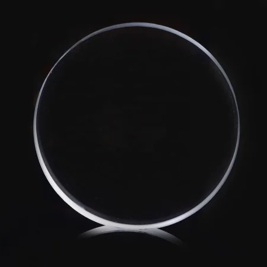
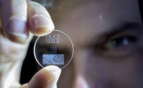
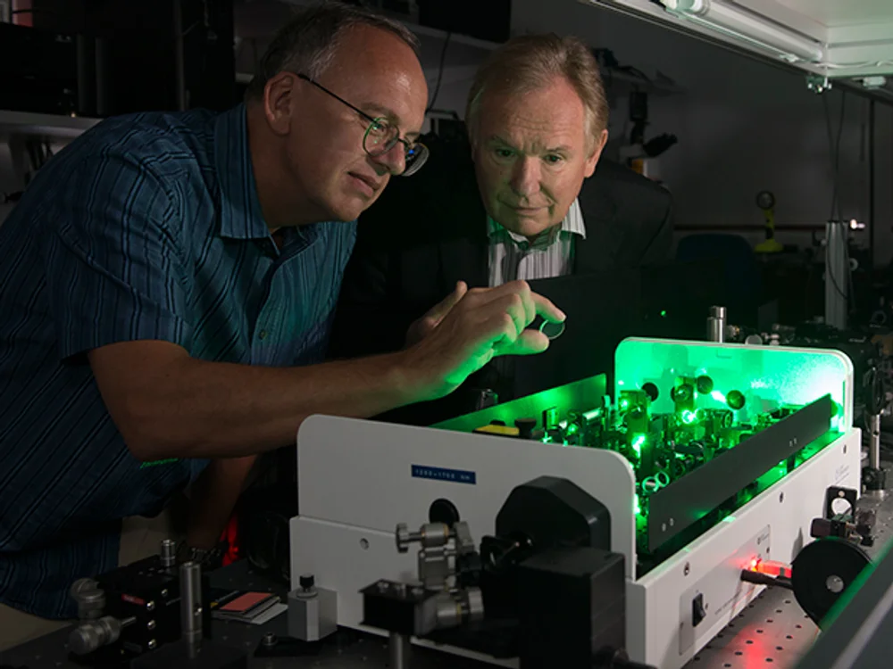

The Tech Lighthouse
Exploring Tomorrow's Technologies Today
The Tech Lighthouse
Exploring Tomorrow's Technologies Today
Project Silica addresses fundamental limitations of current data storage solutions while opening up new possibilities for long-term data preservation across multiple industries.
Quartz glass is incredibly durable and immune to environmental factors. Data stored using Project Silica could remain readable for up to 10,000 years or more, far outlasting any current storage medium.
A single DVD-sized silica glass platter can currently hold several terabytes (TB) of data. The long-term potential is for a single disc to hold multiple terabytes, even petabytes, of information.
Once the data is written, the glass requires no energy to maintain. You can simply store it on a shelf. This eliminates the massive energy costs associated with powered data centers.
Quartz glass storage is immune to:

While initial writing technology is expensive, the long-term cost of not having to constantly migrate data or power the storage makes it very cost-effective for archival storage.


Traditional data centers consume enormous amounts of energy for both operation and cooling. Project Silica's passive storage could significantly reduce the carbon footprint of long-term data preservation.
Quartz glass is made from silica (sand), one of the most abundant materials on Earth, making it a sustainable choice compared to rare earth metals used in some storage technologies.
By creating storage that lasts for millennia instead of years, Project Silica could dramatically reduce the electronic waste generated by constantly replacing storage media.